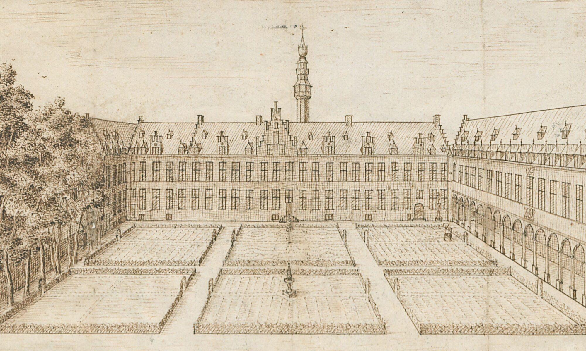

Hof van Liere is een historisch kasteel in Zandhoven, in de Antwerpse Kempen. Het ligt verscholen in een groen park met vijvers, weiden en oude bomen, net buiten het dorpscentrum. Via de omliggende wegen en wandelpaden kan je een glimp opvangen van het kasteel en zijn omgeving.
Reeds in de 15e eeuw wordt hier een versterkt Hof van Liere vermeld, dat toebehoorde aan de heren van Liere. In de loop van de 16e en 17e eeuw werd het domein verder uitgebouwd en evolueerde het tot een comfortabel landgoed. Begin 15e eeuw werd het kasteel verbouwd door Maximiliaan T'Seraerts, en in het eerste kwart van de 19e eeuw opnieuw gerestaureerd door jonkheer Jacobus J. Meyers.
Het huidige kasteel staat op een soort eiland, omgeven door water en dubbele omgrachting. Achter de eerste gracht bevinden zich dienstgebouwen uit de 19e eeuw in neogotische stijl. Een tweede brug leidt via een poort naar de binnenplaats van het kasteel met zijn L-vormige plattegrond. Rondom ligt een parkachtig domein van ongeveer 5 hectare met vijvers, graslanden, bos en een prachtige beukendreef.
Hof van Liere is vandaag een privé-eigendom en niet vrij te bezoeken. Wie van kastelen in Antwerpen en landschappen houdt, kan het kasteel wel vanop afstand zien tijdens een wandeling of fietsroute rond Zandhoven. Zo blijft het een herkenningspunt in het landschap en een stille getuige van de lokale geschiedenis.
Verblijf in de Antwerpse Kempen
Hoewel Hof van Liere zelf niet toegankelijk is als hotel of gastenverblijf, is Zandhoven een rustig vertrekpunt om de Antwerpse Kempen en de stad Antwerpen te ontdekken. In de omgeving vind je verschillende B&B's, hotels en vakantiewoningen.
Verblijf in een kleinschalige B&B of comfortabel hotel in of rond Zandhoven. Ideaal als uitvalsbasis voor wandelingen langs kastelen en rustige fietswegen in de Kempen.
Bekijk accommodaties in ZandhovenKies voor een verblijf in de Antwerpse Kempen, met toegang tot bossen, heide en natuurgebieden. Combineer je verblijf met wandelingen, fietstochten en culturele uitstappen.
Bekijk accommodaties in de KempenLogeer in Antwerpen en maak een daguitstap naar Zandhoven. Zo combineer je musea, horeca en shopping in de stad met rust en groen in de omliggende dorpen.
Overnachtingen in AntwerpenDeze pagina kan affiliate links bevatten. Als je via onze partners boekt, ontvangen wij een kleine commissie, zonder extra kost voor jou. Zo help je ons deze gids gratis te houden.
Praktische info
Hof van Liere is privébezit en niet toegankelijk voor individueel bezoek. Je kan het kasteel en het domein niet betreden, maar wel vanop afstand bekijken vanaf de openbare weg of tijdens een wandeling in de omgeving. Respecteer steeds de privacy van de eigenaars.
Met de auto: Zandhoven ligt nabij de E313 en E34. Volg de borden naar Zandhoven en rij richting Hofeinde. Parkeer in de omgeving volgens de lokale richtlijnen en verken de buurt te voet.
Met het openbaar vervoer: Neem de bus vanuit Antwerpen of omliggende gemeenten naar Zandhoven. Stap af in het centrum en wandel verder richting Hofeinde.
Omdat het kasteel enkel vanop afstand te zien is, volstaat een korte stop van 30 minuten als je er speciaal langs rijdt. Combineer je het met een wandeling of fietstocht langs andere bezienswaardigheden in Zandhoven, dan ben je gemakkelijk een halve dag onderweg.
Blijf op de openbare weg en volg de wandel- of fietsroutes; betreed het domein niet zonder toestemming. Combineer je bezoek met een bewegwijzerde kastelentocht in Zandhoven. Neem je verrekijker of camera mee om het kasteel vanop afstand beter te kunnen bekijken.
Activiteiten in de buurt
De omgeving van Zandhoven leent zich uitstekend voor rustige wandelingen en fietstochten langs kastelen, hoeven en groene landschappen. Hof van Liere is een van de historische punten op de route, maar zeker niet het enige.
Ontdek verschillende kastelen en landhuizen in en rond Zandhoven via georganiseerde of bewegwijzerde kastelentochten. Je passeert langs Hof van Liere, Kasteel van Montens, Hof ter Donck en andere historische domeinen.
Routes & evenementen bekijkenGebruik Zandhoven als startpunt voor een fietstocht langs knooppunten in de Kempen. Combineer landelijke wegen, bossen en kleine dorpen met tussenstops bij kastelen.
Fietsroutes ontdekkenVolg lokale wandelingen die langs velden, beekvalleien en bosranden lopen. Sommige routes bieden doorkijkjes op Hof van Liere en andere domeinen in de buurt van de Tappelbeek.
Wandelroutes bekijkenOp korte rijafstand ligt Antwerpen, waar je musea, historische gebouwen en gezellige horeca vindt. Ideaal om natuur en stad te combineren tijdens je verblijf in de regio.
Activiteiten in AntwerpenAdres: Hofeinde 2–4, 2240 Zandhoven, België
Het kasteel ligt in een groen domein aan de rand van Zandhoven, verscholen tussen bomen, vijvers en weilanden. Vanaf de omliggende straten en paden kan je het kasteel vanop afstand zien liggen, nabij de Tappelbeek.